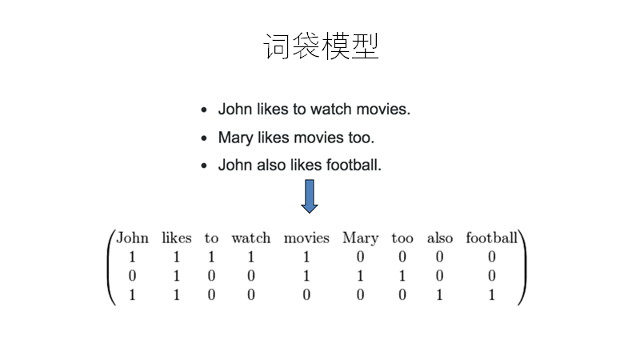
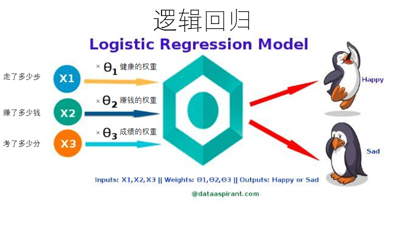

Kaggle-Sentiment Analysis on Moview Reviews
文章目录
背景
之前以为Kaggle是一个对机器学习算法理解要求很高的网站，需要对机器学习有一定的了解（这也是是否能将机器学习应用到实际开发中的能力需求），需要自己熟练的使用各种算法，理解并且能够推导算法的核心部分才能够解决问题，于是对于算法的学习有些畏惧，一是太多太难，二是认为《机器学习实战》的实例好像也挺简单的，并没有真正的讲解算法的应用背景（虽然筛选约会对象的例子十分的不错），于是觉得学习起来并没有什么奔头（枯燥的学习算法而且还不知道该如何去使用确实是难以忍受，但是回过头来想想，如果可以扎实的学完《机器学习实战》这本书，后续直接进入实战是非常的快的。）。便想着学习下Kaggle上的实际案例，通过学习案例中的算法的使用方法来推动算法的学习，是为背景。
一、总结
为什么把总结放在最前面呢？因为本身项目并没有真正的给我带来对逻辑回归或者多项式朴素贝叶斯算法的深刻的学习，项目是在调用sklearn封装好的函数基础上进行的。那么给我带来的除了掉包之外，最重要的有以下几点收获：
- 熟悉Kaggle的竞赛流程：对于后续学习算法有非常大的帮助，比如在我学习完了KNN算法之后，可以去Kaggle上寻找一些使用KNN算法实践的项目，帮助自己提升对于算法的理解，而不是简单的知道了算法的实现方法之后甚至都不知道怎么样优化就转而进入下一个算法。
- 理清开发流程为后续的学习扫清道路：之前对于KNN的学习让我明白了一个算法的具体开发流程，这个项目让我知道了算法开发出来之后该如何去调用。这叫做大的方向确认了，之后就该不断的去完善自己如下几个方面的技术：
- 文本特征工程：在本实例中文本特征工程就非常的重要，如何将人类习以为常的文本转化为计算机程序可以理解和使用的向量类型，又如何去掉停用词（TF-IDF模型还是词袋模型）构建语料库都是我需要学习的问题。在KNN的优化约会对象配对的实例中，如何对不同大小的数据进行归一化处理也是我需要学习的，如果我不学习KNN就不知道该怎么样处理。
- 经典算法的学习：从暑假开始学习机器学习到这篇文章出来也过去快一周了，我浅尝辄止，学习了KNN、决策树、回归算法。这些不管是看视频还是看书来的都是浅显的，即便我把原理说的再好听，很多东西我去实践就体会不到其中真的可以通过修改的而优化的部分。之后我觉得最适合的方法就是在通过书或者视频或者博客学习了一个算法之后，必须拿着这个算法可以写出来一些实战的案例才算是真正的对这个算法入门了，之后才是深入的去研究如何通过一些调参或者别的方式来优化。
- 因为本文着重的部分是对视频教程的总结，具体的细节算法和模型的使用在下列的文章中又进行详细描述
二、Kaggle 平台介绍、环境准备和UP视频总结
Kaggle 平台介绍
我们可以进入官网 Kaggle，注册登录这些不提，说一些我摸索之后觉得需要注意的细节：
- 如果你想要提交你的结果，在比赛的页面选择左侧的 Late Submission ，然后将你的csv文件打包成 zip/gz/rar/7z格式的压缩包进行上传，推荐使用科学上网，否则可能会出现上传问题。
- 注册登录之后，我不知道为什么我参加的比赛不能在我的首页展示，即便我得到了排名打分也没有在我的首页进行展示，这可能是 Kaggle 最新的改动，因为我在搜了之前的一些问题表示即便没有提交的一些项目也可以查看到。
- How to use Kaggle：你可以在这个页面快速的了解到各个部分的内容和分类，在Competitions ，你可以了解到各个分类的比赛都有哪些，还会把一些简单的比赛都列在上面，比如：Getting Started 部分下列出了三个简单的案例（有两个就是国内一些培训机构拿来）
环境准备
在命令行界面运行下面这行命令，从清华大学开源软件镜像站下载 Pandas、Sklearn 这两个python 第三方模块。pip install pandas sklearn -i https://pypi.tuna.tsinghua.edu.cn/simple 一般只要安装了 Anaconda 之后从其中打开 Jupyter Notebook 就会自动安装好了这两个库，如果有版本问题可以在代码中插入如下代码
1 | # 直接运行本单元格即可，本单元格代码的作用是：忽略下面代码执行过程中的版本警告等无用提示 |
Up视频总结
本文是B站up主同济子豪兄的有关Kaggle新手实战教程的视频，使用Sklearn的模块库实战的教程。本文的Kaggle题目是：Sentiment Analysis on Movie Reviews
三句话总结该项目：
- Kaggle没有什么可怕的
- 黑猫白猫抓到老鼠就是好猫：我们可以在Kaggle的Kernels中查看别人使用了哪些高大上的算法，其实不然，简单的算法有的时候效果也不错
- 数据预处理和特征工程很重要，特别是对于文本处理方面
如果你不太会使用现在看到的这个jupyter notebook工具，子豪的这个视频可以帮到你：python数据分析神器Jupyter notebook快速入门
三、竞赛项目开发流程
我们可以把竞赛的流程分为如下几步
- Data Description & Evaluation：查看 Description，了解项目的背景（方便查阅之前的实现算法）和提供的Data规格，查看 Overview-Evalution下的提交数据格式
- 导入数据集，处理数据集
- 构建语料库或处理数据集（归一化处理等）
- 进行文本特征工程
- 词袋模型
- TF-IDF模型
- word2vec 可视化展示
- 选择算法构建分类器
- 逻辑回归分类器
- 多项式朴素贝叶斯分类器
- 对测试集进程特征工程处理后进行预测得到结果按照要求进行处理打包后上传
Data Description & Evaluation
查看 Data Descrition 下的描述：
The dataset is comprised of tab-separated files with phrases from the Rotten Tomatoes dataset. The train/test split has been preserved for the purposes of benchmarking, but the sentences have been shuffled from their original order. Each Sentence has been parsed into many phrases by the Stanford parser. Each phrase has a PhraseId. Each sentence has a SentenceId. Phrases that are repeated (such as short/common words) are only included once in the data.
- train.tsv contains the phrases and their associated sentiment labels. We have additionally provided a SentenceId so that you can track which phrases belong to a single sentence.
test.tsv contains just phrases. You must assign a sentiment label to each phrase.
The sentiment labels are:0 - negative
- 1 - somewhat negative
- 2 - neutral
- 3 - somewhat positive
- 4 - positive
我们可以在 Data 标签下查看到每个文件下的内容和格式，不仅仅是预览，而是可以直接查看文件。（部分压缩包文件除外）本实例所提供的数据文件是 tsv （与csv的差别在于csv使用,隔开，而tsv使用 Tab 隔开）。
查看 Overview 下的 Evaluation 存在 Submission Format
For each phrase in the test set, predict a label for the sentiment. Your submission should have a header and look like the following:
1 | PhraseId,Sentiment |
导入数据集
1 | import pandas as pd |
构建语料库
我们需要对文本进行一些处理，将原始的文本中的每一个词变成计算机看得懂的向量，这一过程叫做文本的特征工程，非常重要。
有很多将词变成向量的方法，比如下面将要介绍的词袋模型、TF-IDF模型，以及视频介绍中的 word2vec模型（不实用）。
1 | # 因为是对文本进行向量化， |
文本特征工程和构建分类器
1-词袋模型构建特征工程

下述所有的代码都是直接使用 sklearn 库中封装好的函数🤢
1 | # 用sklearn库中的CountVectorizer构建词袋模型 |
特征方程构建好之后就要开始分配训练集和验证机数据，因为题目提供的数据分为两类，一类是有标签给我们训练的数据集，一类是无标签只有文本数据需要我们标注标签的数据集。而为了我们在本地衡量算法的优劣性方便进行算法的优化，我们需要将有标签的数据集分为训练集和验证集，训练集让我们的算法自行进行学习，而验证集来验证算法的准确率。最后得到的算法才可以拿去对无标签的数据集进行预测。
1 | # 将训练集随机拆分为新的训练集和验证集，默认3:1,然后进行词频统计 |
- x_train 训练集数据 （相当于课后习题）
- x_test 验证集数据 （相当于模拟考试题）
- y_train 训练集标签 （相当于课后习题答案）
- y_test 验证集标签（相当于模拟考试题答案）
1 | # 用上面构建的词袋模型，把训练集和验证集中的每一个词都进行特征工程，变成向量 |
2-构建分类器算法，对词袋模型处理后的文本进行机器学习和数据挖掘
逻辑回归分类器

直接使用 Sklearn-LogistiRegression 算法
1 | from sklearn.linear_model import LogisticRegression |
多项式朴素贝叶斯分类器
1 | #引用朴素贝叶斯进行分类训练和预测 |
实践证明：多项式朴素贝叶斯分类器，训练速度很快，但准确率较低。
3-使用TF-IDF模型进行文本特征工程
TF值衡量了一个词出现的次数。
IDF值衡量了这个词是不是烂大街。如果是the、an、a等烂大街的词，IDF值就会很低。
两个值的乘积TF_IDF反映了一个词的出现带来的特异性信息。
例如，“中国”、“功夫”这两个词也许会同时出现，但“中国”这个词在各个文档中都有出现，IDF值很低，因此TF_IDF值也很低。 而“功夫”这个词只在特定文档中出现，这个词能带来的“特异性”信息就会大很多。
缺少图解
1 | # 用sklearn库中的TfidfVectorizer构建TF-IDF模型 |
类似上面的操作，拆分原始训练集为训练集和验证集，用TF-IDF模型对每一个词都进行特征工程，变成向量
1 | from sklearn.model_selection import train_test_split |
4-构建分类器算法，对TF-IDF模型处理后的文本进行机器学习和数据挖掘
朴素贝叶斯分类器
1 | #引用朴素贝叶斯进行分类训练和预测 |
逻辑回归分类器
1 | # sklearn默认的逻辑回归模型 |
对比两个预测准确率可以看出，在逻辑回归中增加C和dual这两个参数可以提高验证集上的预测准确率，但如果每次都手动修改就太麻烦了。我们可以用sklearn提供的强大的网格搜索功能进行超参数的批量试验。
搜索空间：C从1到9。对每一个C，都分别尝试dual为True和False的两种参数。
最后从所有参数中挑出能够使模型在验证集上预测准确率最高的。
1 | from sklearn.model_selection import GridSearchCV |
最后超参数搜索的结果是，C为5，dual为True，能够使逻辑回归模型在验证集上预测准确率最高。我们便采用这个最优参数，构建lg_final分类器，最终在验证集上预测正确率为0.655464。
1 | lg_final = grid.best_estimator_ |
对测试集的数据进行预测，提交Kaggle竞赛最终结果
1 |
|